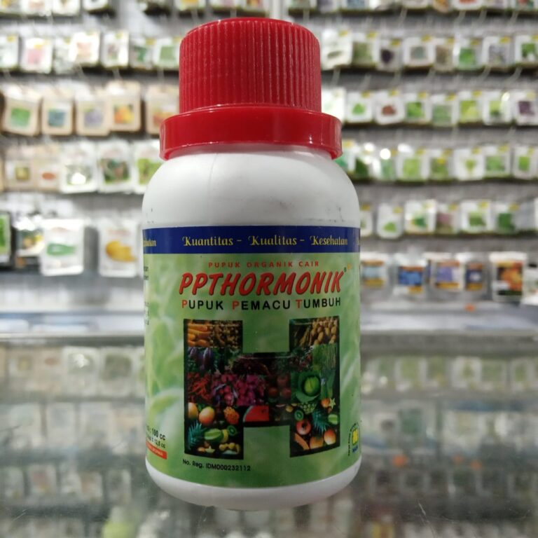
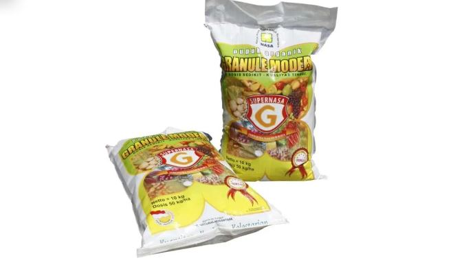

Liora
Pupuk ini sangat berguna bagi tanaman saya dan juga terhindar dari hama hama jahat yang merusak pertumbuhan tanaman saya
Fani
Tempat pembeli pupuk organik terbaik..mantap
Reza
The besttt pokok nyaa
Dapatkan produk terbaik di toko kami!!
Pupuk Organik POP SUPERNASA untuk Mnyuburkan tanaman dan cepat berbuah
POC NASA merupakan produk pupuk organik cair multiguna yang diproses dengan formula khusus dan dibuat dari bahan dasar alami (organik) yang multiguna untuk tanaman, peternakan dan perikanan.

Hormonik NASA kemasan 100 ml. Hormonik merupakan singkatan dari Hormon Organik. Hormon atau zat pengatur tumbuh (ZPT) adalah senyawa organik bukan hara/nutrisi yang diberikan pada tanaman dan bisa pula pada hewan ternak/unggas. Pemberian hormon pada tanaman memiliki kontribusi penting dalam memacu proses pertumbuhan tanaman
Produk pertanian Natural Nusantara, Power Nutrition adalah nutrisi terlengkap khusus digunakan untuk tanaman buah. Pupuk ini diproduksi dari bahan organik (alami) pilihan terbaik yang ketersediaannya terjamin. Dibuat dengan mekanisme atau proses teknologi gradasi dan degradasi unsur dengan melewati proses piruvatisasi tingkat 3, sehingga dapat langsung dimanfaatkan dengan baik oleh jaringan tanaman.
Merek:PT NATURAL NUSANTARALebih banyak Taman & Kebun dari PT NATURAL NUSANTARA
Salah satu produk terbaru dari NASA PT Natural Nusantara bersamaan dengan TANGGUH Probiotik yang akan membantu petani dalam meningkatkan hasil produksinya dengan tetap memenuhi standar Kuantitas, Kualitas dan Kelestarian (K3). Produk Pupuk Hayati ini murni terbuat dari bahan-bahan alami ramah lingkungan sehingga aman untuk lingkungan dan manusia.

Dapat meningkatkan kuantitas dan kualitas produksi tanaman, meningkatkan daya tahan tanaman karena kecukupan nutrisi yang dibutuhkan, dan melarutkan sisa-sisa pupuk kimia dalam tanah, sehingga dapat dimanfaatkan tanaman kembali.
salah satu produk pestisida organik PT Natural Nusantara berupa perata, pembasah, perekat, terutama bagi pestisida (insektisida-fungisida-herbisida) dan juga sebagai pupuk organik cair.
memiliki lebih banyak unsur-unsur yang dibutuhkan tanaman, dikemas dalam botol plastik volume 1 liter, mempunyai kandungan unsur hara mikro lengkap, pupuk ini sungguh luar biasa. Harga pupuk BINTANG TANI sangat sebanding dengan mutunya dan kualitas bukan abal-abal.
Pestisida organik dari Nasa ini juga mampu melindungi akar-akar tanaman dan perkecambahan biji dari sumber infeksi penyakit pada tanaman. Penggunaan Natural Glio ini aman bagi lingkungan, manusia serta hewan.
Natural BVR mendukung program pertanian berkelanjutan, mudah digunakan dan harganya cukup terjangkau, aman bagi lingkungan, manusia dan juga hewan.
Pengendali hama yang satu ini terbuat dari bahan-bahan organik salah satunya adalah berasal dari saripati beberapa tumbuhan yang dipilih khusus dan melalui proses yang alami dan tidak mengandung zat kimia berbahaya.
Pupuk organik sendiri merupakan pupuk yang tersusun dari materi makhluk hidup, seperti pelapukan sisa -sisa tanaman, hewan, dan manusia. Pupuk organik dapat berbentuk padat atau cair yang digunakan untuk memperbaiki sifat fisik, kimia, dan biologi tanah. Pupuk organik mengandung banyak bahan organik daripada kadar haranya. Sumber bahan organik dapat berupa kompos, pupuk hijau, pupuk kandang, sisa panen (jerami, brangkasan, tongkol jagung, bagas tebu, dan sabut kelapa), limbah ternak, limbah industri yang menggunakan bahan pertanian, dan limbah kota (sampah).
2020 All Rights Reserved. Design by Free html Templates